코드
from preamble import *lazychoi
November 14, 2022
import os
# 이 파일은 열 이름을 나타내는 헤더가 없으므로 header=None으로 지정하고
# "names" 매개변수로 열 이름을 제공합니다
data = pd.read_csv(
os.path.join(mglearn.datasets.DATA_PATH, "adult.data"), header=None, index_col=False,
names=['age', 'workclass', 'fnlwgt', 'education', 'education-num',
'marital-status', 'occupation', 'relationship', 'race', 'gender',
'capital-gain', 'capital-loss', 'hours-per-week', 'native-country',
'income'])
# 예제를 위해 몇개의 열만 선택합니다
data = data[['age', 'workclass', 'education', 'gender', 'hours-per-week',
'occupation', 'income']]
data.head()| age | workclass | education | gender | hours-per-week | occupation | income | |
|---|---|---|---|---|---|---|---|
| 0 | 39 | State-gov | Bachelors | Male | 40 | Adm-clerical | <=50K |
| 1 | 50 | Self-emp-not-inc | Bachelors | Male | 13 | Exec-managerial | <=50K |
| 2 | 38 | Private | HS-grad | Male | 40 | Handlers-cleaners | <=50K |
| 3 | 53 | Private | 11th | Male | 40 | Handlers-cleaners | <=50K |
| 4 | 28 | Private | Bachelors | Female | 40 | Prof-specialty | <=50K |
원본 특성:
['age', 'workclass', 'education', 'gender', 'hours-per-week', 'occupation', 'income']
get_dummies 후의 특성:
['age', 'hours-per-week', 'workclass_ ?', 'workclass_ Federal-gov', 'workclass_ Local-gov', 'workclass_ Never-worked', 'workclass_ Private', 'workclass_ Self-emp-inc', 'workclass_ Self-emp-not-inc', 'workclass_ State-gov', 'workclass_ Without-pay', 'education_ 10th', 'education_ 11th', 'education_ 12th', 'education_ 1st-4th', 'education_ 5th-6th', 'education_ 7th-8th', 'education_ 9th', 'education_ Assoc-acdm', 'education_ Assoc-voc', 'education_ Bachelors', 'education_ Doctorate', 'education_ HS-grad', 'education_ Masters', 'education_ Preschool', 'education_ Prof-school', 'education_ Some-college', 'gender_ Female', 'gender_ Male', 'occupation_ ?', 'occupation_ Adm-clerical', 'occupation_ Armed-Forces', 'occupation_ Craft-repair', 'occupation_ Exec-managerial', 'occupation_ Farming-fishing', 'occupation_ Handlers-cleaners', 'occupation_ Machine-op-inspct', 'occupation_ Other-service', 'occupation_ Priv-house-serv', 'occupation_ Prof-specialty', 'occupation_ Protective-serv', 'occupation_ Sales', 'occupation_ Tech-support', 'occupation_ Transport-moving', 'income_ <=50K', 'income_ >50K']| age | hours-per-week | workclass_ ? | workclass_ Federal-gov | ... | occupation_ Tech-support | occupation_ Transport-moving | income_ <=50K | income_ >50K | |
|---|---|---|---|---|---|---|---|---|---|
| 0 | 39 | 40 | 0 | 0 | ... | 0 | 0 | 1 | 0 |
| 1 | 50 | 13 | 0 | 0 | ... | 0 | 0 | 1 | 0 |
| 2 | 38 | 40 | 0 | 0 | ... | 0 | 0 | 1 | 0 |
| 3 | 53 | 40 | 0 | 0 | ... | 0 | 0 | 1 | 0 |
| 4 | 28 | 40 | 0 | 0 | ... | 0 | 0 | 1 | 0 |
5 rows × 46 columns
X.shape: (32561, 44) y.shape: (32561,)from sklearn.linear_model import LogisticRegression
from sklearn.model_selection import train_test_split
X_train, X_test, y_train, y_test = train_test_split(X, y, random_state=0)
logreg = LogisticRegression(max_iter=5000)
logreg.fit(X_train, y_train)
print("테스트 점수: {:.2f}".format(logreg.score(X_test, y_test)))테스트 점수: 0.81| 숫자 특성 | 범주형 특성 | |
|---|---|---|
| 0 | 0 | 양말 |
| 1 | 1 | 여우 |
| 2 | 2 | 양말 |
| 3 | 1 | 상자 |
| 숫자 특성 | 범주형 특성_상자 | 범주형 특성_양말 | 범주형 특성_여우 | |
|---|---|---|---|---|
| 0 | 0 | 0 | 1 | 0 |
| 1 | 1 | 0 | 0 | 1 |
| 2 | 2 | 0 | 1 | 0 |
| 3 | 1 | 1 | 0 | 0 |
[[1. 0. 0. 0. 1. 0.]
[0. 1. 0. 0. 0. 1.]
[0. 0. 1. 0. 1. 0.]
[0. 1. 0. 1. 0. 0.]]['숫자 특성_0' '숫자 특성_1' '숫자 특성_2' '범주형 특성_상자' '범주형 특성_양말' '범주형 특성_여우']| age | workclass | education | gender | hours-per-week | occupation | income | |
|---|---|---|---|---|---|---|---|
| 0 | 39 | State-gov | Bachelors | Male | 40 | Adm-clerical | <=50K |
| 1 | 50 | Self-emp-not-inc | Bachelors | Male | 13 | Exec-managerial | <=50K |
| 2 | 38 | Private | HS-grad | Male | 40 | Handlers-cleaners | <=50K |
| 3 | 53 | Private | 11th | Male | 40 | Handlers-cleaners | <=50K |
| 4 | 28 | Private | Bachelors | Female | 40 | Prof-specialty | <=50K |
from sklearn.linear_model import LogisticRegression
from sklearn.model_selection import train_test_split
# income을 제외한 모든 열을 추출합니다
data_features = data.drop("income", axis=1)
# 데이터프레임과 incom을 분할합니다.
X_train, X_test, y_train, y_test = train_test_split(
data_features, data.income, random_state=0)
ct.fit(X_train)
X_train_trans = ct.transform(X_train)
print(X_train_trans.shape)(24420, 44)테스트 점수: 0.81선형 모델이나 나이브 베이즈 모델 같은 덜 복잡한 모델은 구간 분할, 다항식, 상호작용에 큰 영향을 받을 수 있다.
트리 기반 모델은 스스로 중요한 상호작용을 찾아낼 수 있고 대부분의 경우 데이터를 명시적으로 변환하지 않아도 된다.
SVM, 최근접 이웃, 신경망 같은 모델은 이따금 구간 분할, 상호작용, 다항식으로 이득을 볼 수 있지만 선형 모델보다는 영향이 그렇게 뚜렷하지 않다.
from sklearn.linear_model import LinearRegression
from sklearn.tree import DecisionTreeRegressor
X, y = mglearn.datasets.make_wave(n_samples=120)
line = np.linspace(-3, 3, 1000, endpoint=False).reshape(-1, 1)
reg = DecisionTreeRegressor(min_samples_leaf=3).fit(X, y)
plt.plot(line, reg.predict(line), label="결정 트리")
reg = LinearRegression().fit(X, y)
plt.plot(line, reg.predict(line), '--', label="선형 회귀")
plt.plot(X[:, 0], y, 'o', c='k')
plt.ylabel("회귀 출력")
plt.xlabel("입력 특성")
plt.legend(loc="best")
plt.show() # 책에는 없음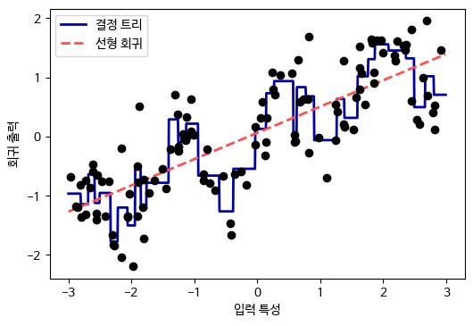
bin edges:
[array([-2.967, -2.378, -1.789, -1.2 , -0.612, -0.023, 0.566, 1.155,
1.744, 2.333, 2.921]) ]<120x10 sparse matrix of type '<class 'numpy.float64'>'
with 120 stored elements in Compressed Sparse Row format>[[-0.753]
[ 2.704]
[ 1.392]
[ 0.592]
[-2.064]
[-2.064]
[-2.651]
[ 2.197]
[ 0.607]
[ 1.248]]array([[0., 0., 0., 1., 0., 0., 0., 0., 0., 0.],
[0., 0., 0., 0., 0., 0., 0., 0., 0., 1.],
[0., 0., 0., 0., 0., 0., 0., 1., 0., 0.],
[0., 0., 0., 0., 0., 0., 1., 0., 0., 0.],
[0., 1., 0., 0., 0., 0., 0., 0., 0., 0.],
[0., 1., 0., 0., 0., 0., 0., 0., 0., 0.],
[1., 0., 0., 0., 0., 0., 0., 0., 0., 0.],
[0., 0., 0., 0., 0., 0., 0., 0., 1., 0.],
[0., 0., 0., 0., 0., 0., 1., 0., 0., 0.],
[0., 0., 0., 0., 0., 0., 0., 1., 0., 0.]])line_binned = kb.transform(line)
reg = LinearRegression().fit(X_binned, y)
plt.plot(line, reg.predict(line_binned), label='구간 선형 회귀')
reg = DecisionTreeRegressor(min_samples_split=3).fit(X_binned, y)
plt.plot(line, reg.predict(line_binned), label='구간 결정 트리')
plt.plot(X[:, 0], y, 'o', c='k')
plt.vlines(kb.bin_edges_[0], -3, 3, linewidth=1, alpha=.2)
plt.legend(loc="best")
plt.ylabel("회귀 출력")
plt.xlabel("입력 특성")
plt.show() # 책에는 없음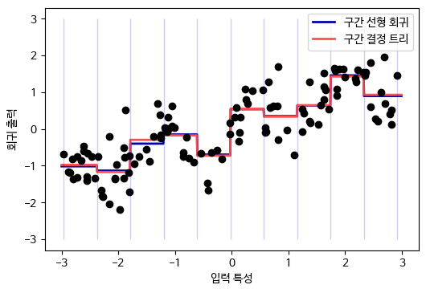
reg = LinearRegression().fit(X_combined, y)
line_combined = np.hstack([line, line_binned])
plt.plot(line, reg.predict(line_combined), label='원본 특성을 더한 선형 회귀')
plt.vlines(kb.bin_edges_[0], -3, 3, linewidth=1, alpha=.2)
plt.legend(loc="best")
plt.ylabel("회귀 출력")
plt.xlabel("입력 특성")
plt.plot(X[:, 0], y, 'o', c='k')
plt.show() # 책에는 없음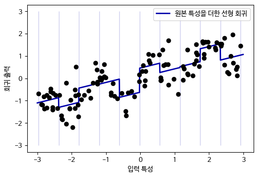
reg = LinearRegression().fit(X_product, y)
line_product = np.hstack([line_binned, line * line_binned])
plt.plot(line, reg.predict(line_product), label='원본 특성을 곱한 선형 회귀')
plt.vlines(kb.bin_edges_[0], -3, 3, linewidth=1, alpha=.2)
plt.plot(X[:, 0], y, 'o', c='k')
plt.ylabel("회귀 출력")
plt.xlabel("입력 특성")
plt.legend(loc="best")
plt.show() # 책에는 없음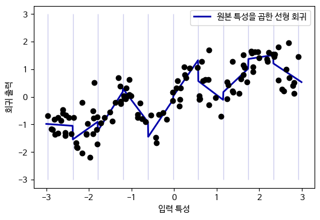
X 원소:
[[-0.753]
[ 2.704]
[ 1.392]
[ 0.592]
[-2.064]]
X_poly 원소:
[[ -0.753 0.567 -0.427 0.321 -0.242 0.182 -0.137
0.103 -0.078 0.058]
[ 2.704 7.313 19.777 53.482 144.632 391.125 1057.714
2860.36 7735.232 20918.278]
[ 1.392 1.938 2.697 3.754 5.226 7.274 10.125
14.094 19.618 27.307]
[ 0.592 0.35 0.207 0.123 0.073 0.043 0.025
0.015 0.009 0.005]
[ -2.064 4.26 -8.791 18.144 -37.448 77.289 -159.516
329.222 -679.478 1402.367]]항 이름:
['x0' 'x0^2' 'x0^3' 'x0^4' 'x0^5' 'x0^6' 'x0^7' 'x0^8' 'x0^9' 'x0^10']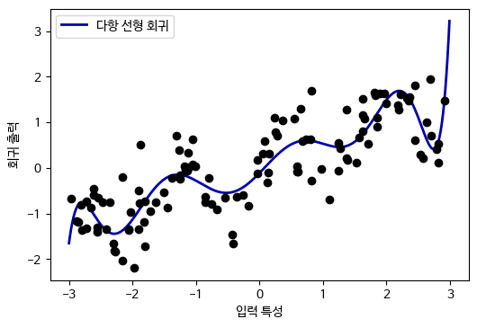
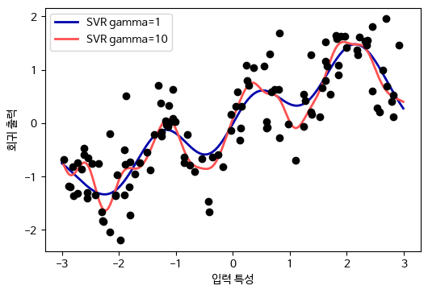
# 보스턴 주택 데이터셋이 1.0 버전에 deprecated 되었고 1.2 버전에서 삭제됩니다.
# 경고 메시지를 피하기 위해 다음 코드를 추가합니다.
import warnings
warnings.filterwarnings("ignore", category=FutureWarning)
from sklearn.datasets import load_boston
from sklearn.model_selection import train_test_split
from sklearn.preprocessing import MinMaxScaler
boston = load_boston()
X_train, X_test, y_train, y_test = train_test_split(boston.data, boston.target,
random_state=0)
# 데이터 스케일 조정
scaler = MinMaxScaler()
X_train_scaled = scaler.fit_transform(X_train)
X_test_scaled = scaler.transform(X_test)X_train.shape: (379, 13)
X_train_poly.shape: (379, 105)다항 특성 이름:
['1' 'x0' 'x1' 'x2' 'x3' 'x4' 'x5' 'x6' 'x7' 'x8' 'x9' 'x10' 'x11' 'x12'
'x0^2' 'x0 x1' 'x0 x2' 'x0 x3' 'x0 x4' 'x0 x5' 'x0 x6' 'x0 x7' 'x0 x8'
'x0 x9' 'x0 x10' 'x0 x11' 'x0 x12' 'x1^2' 'x1 x2' 'x1 x3' 'x1 x4' 'x1 x5'
'x1 x6' 'x1 x7' 'x1 x8' 'x1 x9' 'x1 x10' 'x1 x11' 'x1 x12' 'x2^2' 'x2 x3'
'x2 x4' 'x2 x5' 'x2 x6' 'x2 x7' 'x2 x8' 'x2 x9' 'x2 x10' 'x2 x11'
'x2 x12' 'x3^2' 'x3 x4' 'x3 x5' 'x3 x6' 'x3 x7' 'x3 x8' 'x3 x9' 'x3 x10'
'x3 x11' 'x3 x12' 'x4^2' 'x4 x5' 'x4 x6' 'x4 x7' 'x4 x8' 'x4 x9' 'x4 x10'
'x4 x11' 'x4 x12' 'x5^2' 'x5 x6' 'x5 x7' 'x5 x8' 'x5 x9' 'x5 x10'
'x5 x11' 'x5 x12' 'x6^2' 'x6 x7' 'x6 x8' 'x6 x9' 'x6 x10' 'x6 x11'
'x6 x12' 'x7^2' 'x7 x8' 'x7 x9' 'x7 x10' 'x7 x11' 'x7 x12' 'x8^2' 'x8 x9'
'x8 x10' 'x8 x11' 'x8 x12' 'x9^2' 'x9 x10' 'x9 x11' 'x9 x12' 'x10^2'
'x10 x11' 'x10 x12' 'x11^2' 'x11 x12' 'x12^2']상호작용 특성이 없을 때 점수: 0.621
상호작용 특성이 있을 때 점수: 0.753from sklearn.ensemble import RandomForestRegressor
rf = RandomForestRegressor(n_estimators=100, random_state=0).fit(X_train_scaled, y_train)
print("상호작용 특성이 없을 때 점수: {:.3f}".format(rf.score(X_test_scaled, y_test)))
rf = RandomForestRegressor(n_estimators=100, random_state=0).fit(X_train_poly, y_train)
print("상호작용 특성이 있을 때 점수: {:.3f}".format(rf.score(X_test_poly, y_test)))상호작용 특성이 없을 때 점수: 0.795
상호작용 특성이 있을 때 점수: 0.775“사용자가 얼마나 자주 로그인하는가?”와 같은 정수 카운트 데이터의 전형적인 분포는 푸아송(Poisson) 분포이다. 푸아송 분포는 단위 시간 안에 일어나는 이벤트 횟수를 표현하는 확률 분포이다.
한쪽으로 치우친 데이터를 로그 스케일로 변환하면 성능이 좋아진다.
[ 56 81 25 20 27 18 12 21 109 7]특성 출현 횟수:
[28 38 68 48 61 59 45 56 37 40 35 34 36 26 23 26 27 21 23 23 18 21 10 9
17 9 7 14 12 7 3 8 4 5 5 3 4 2 4 1 1 3 2 5 3 8 2 5
2 1 2 3 3 2 2 3 3 0 1 2 1 0 0 3 1 0 0 0 1 3 0 1
0 2 0 1 1 0 0 0 0 1 0 0 2 2 0 1 1 0 0 0 0 1 1 0
0 0 0 0 0 0 1 0 0 0 0 0 1 1 0 0 1 0 0 0 0 0 0 0
1 0 0 0 0 1 0 0 0 0 0 0 0 0 0 0 0 0 0 0 1]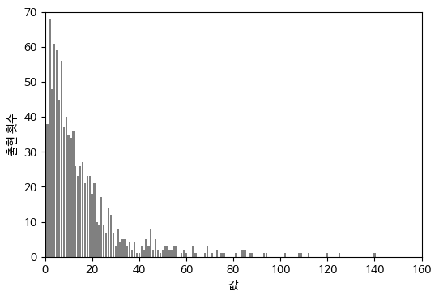
테스트 점수: 0.622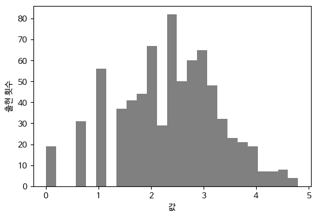
일변량 통계(univariate statistics), 모델 기반 선택(model-based selection), 반복적 선택(iterative selection)
개개의 특성과 타깃 사이에 중요한 통계적 관계가 있는지 계산한다. 분산분석이라고도 한다. 분산분석은 데이터를 클래스별로 나누어 평균을 비교하는 방법이다. 분산분석으로 계산한 어떤 특성의 F-값이 높으면 그 특성은 클래스별로 평균이 서로 다르다는 뜻이다.
이 방법의 핵심 요소는 일변량, 즉 각 특성이 독립적으로 평가된다는 점이다.
분류에서는 f_classif를 사용하여 테스트한 뒤 percentile에 지정한 비율만큼만 선택: SelectPercentile(score_func=f_classif, percentile=50)
from sklearn.datasets import load_breast_cancer
from sklearn.feature_selection import SelectPercentile, f_classif
from sklearn.model_selection import train_test_split
cancer = load_breast_cancer()
# 고정된 난수를 발생시킵니다
rng = np.random.RandomState(42)
noise = rng.normal(size=(len(cancer.data), 50))
# 데이터에 노이즈 특성을 추가합니다
# 처음 30개는 원본 특성이고 다음 50개는 노이즈입니다
X_w_noise = np.hstack([cancer.data, noise])
X_train, X_test, y_train, y_test = train_test_split(
X_w_noise, cancer.target, random_state=0, test_size=.5)
# f_classif(기본값)와 SelectPercentile을 사용하여 특성의 50%를 선택합니다
select = SelectPercentile(score_func=f_classif, percentile=50)
select.fit(X_train, y_train)
# 훈련 세트에 적용합니다
X_train_selected = select.transform(X_train)
print("X_train.shape:", X_train.shape)
print("X_train_selected.shape:", X_train_selected.shape)X_train.shape: (284, 80)
X_train_selected.shape: (284, 40)[ True True True True True True True True True False True False
True True True True True True False False True True True True
True True True True True True False False False True False True
False False True False False False False True False False True False
False True False True False False False False False False True False
True False False False False True False True False False False False
True True False True False False False False]from sklearn.linear_model import LogisticRegression
# 테스트 데이터 변환
X_test_selected = select.transform(X_test)
lr = LogisticRegression(max_iter=5000)
lr.fit(X_train, y_train)
print("전체 특성을 사용한 점수: {:.3f}".format(lr.score(X_test, y_test)))
lr.fit(X_train_selected, y_train)
print("선택된 일부 특성을 사용한 점수: {:.3f}".format(
lr.score(X_test_selected, y_test)))전체 특성을 사용한 점수: 0.947
선택된 일부 특성을 사용한 점수: 0.933지도 학습 머신러닝 모델을 사용하여 특성의 중요도를 평가해서 가장 중요한 특성들만 선택한다. 특성 선택에 사용하는 지도 학습 모델과 최정 사용 지도 학습 모델이 같을 필요는 없다.
일변량 분석과는 반대로 한 번에 모든 특성을 고려하므로 (사용된 모델이 상호작용을 잡아낼 수 있다면) 상호작용 부분을 반영할 수 있다.
SelectFromModel은 (지도 학습 모델로 계산된) 중요도가 지정한 임계치보다 큰 모든 특성을 선택한다.
X_train.shape: (284, 80)
X_train_l1.shape: (284, 40)from sklearn.feature_selection import RFE
select = RFE(RandomForestClassifier(n_estimators=100, random_state=42),
n_features_to_select=40)
select.fit(X_train, y_train)
# 선택된 특성을 표시합니다
mask = select.get_support()
plt.matshow(mask.reshape(1, -1), cmap='gray_r')
plt.xlabel("특성 번호")
plt.yticks([0])
plt.show() # 책에는 없음테스트 점수: 0.940시티 바이크 데이터:
starttime
2015-08-01 00:00:00 3
2015-08-01 03:00:00 0
2015-08-01 06:00:00 9
2015-08-01 09:00:00 41
2015-08-01 12:00:00 39
Freq: 3H, Name: one, dtype: int64pd.data_range(start=datetime-like, end=datetime-like, freq=‘Date/Month/Hour/…’)
plt.figure(figsize=(10, 3))
xticks = pd.date_range(start=citibike.index.min(), end=citibike.index.max(),
freq='D')
week = ["일", "월", "화","수", "목", "금", "토"]
xticks_name = [week[int(w)]+d for w, d in zip(xticks.strftime("%w"),
xticks.strftime(" %m-%d"))]
plt.xticks(xticks, xticks_name, rotation=90, ha="left")
plt.plot(citibike, linewidth=1)
plt.xlabel("날짜")
plt.ylabel("대여횟수")
plt.show() # 책에는 없음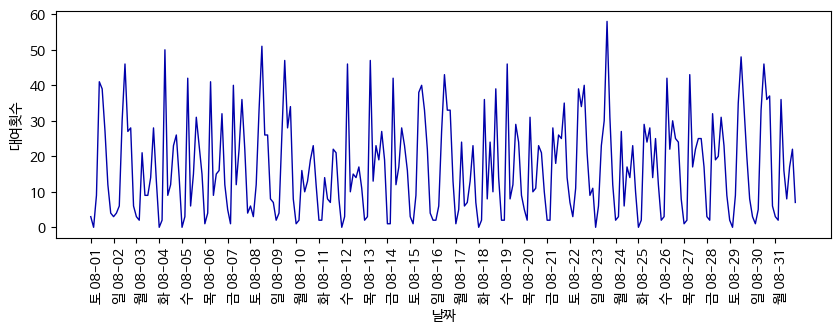
# 처음 184개 데이터 포인트를 훈련 세트로 사용하고 나머지는 테스트 세트로 사용합니다
n_train = 184
# 주어진 특성을 사용하여 평가하고 그래프를 만듭니다
def eval_on_features(features, target, regressor):
# 훈련 세트와 테스트 세트로 나눕니다
X_train, X_test = features[:n_train], features[n_train:]
# 타깃값도 나눕니다
y_train, y_test = target[:n_train], target[n_train:]
regressor.fit(X_train, y_train)
print("테스트 세트 R^2: {:.2f}".format(regressor.score(X_test, y_test)))
y_pred = regressor.predict(X_test)
y_pred_train = regressor.predict(X_train)
plt.figure(figsize=(10, 3))
plt.xticks(range(0, len(X), 8), xticks_name, rotation=90, ha="left")
plt.plot(range(n_train), y_train, label="훈련")
plt.plot(range(n_train, len(y_test) + n_train), y_test, '-', label="테스트")
plt.plot(range(n_train), y_pred_train, '--', label="훈련 예측")
plt.plot(range(n_train, len(y_test) + n_train), y_pred, '--',
label="테스트 예측")
plt.legend(loc=(1.01, 0))
plt.xlabel("날짜")
plt.ylabel("대여횟수")테스트 세트 R^2: -0.04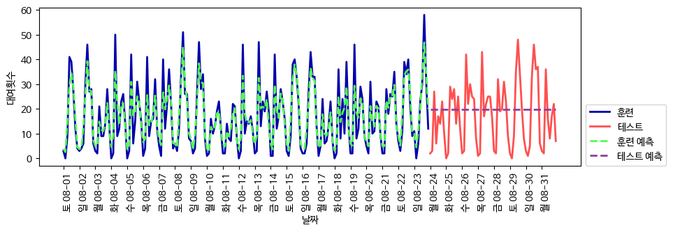
테스트 세트 R^2: 0.60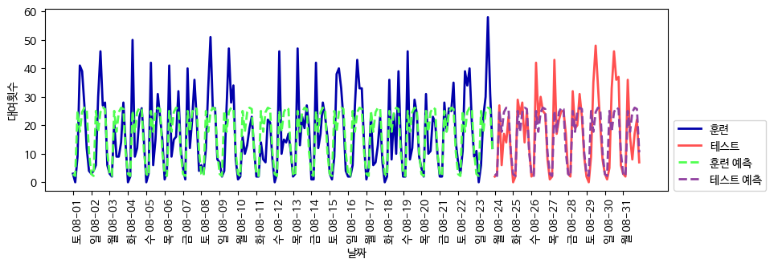
테스트 세트 R^2: 0.84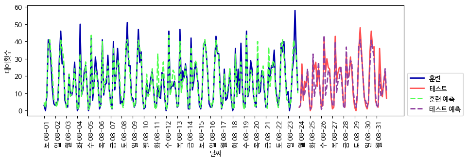
테스트 세트 R^2: 0.13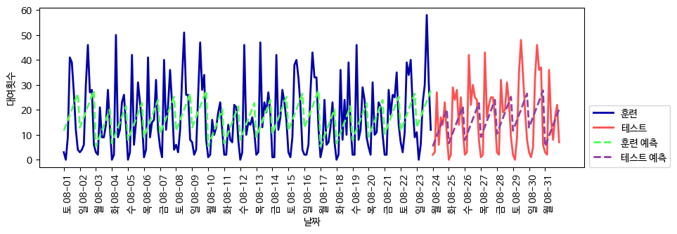
scikit-learn 0.22 버전에서 OneHotEncoder 클래스가 정수 카테고리를 인식하는 방식이 변경됩니다. 이전에는 훈련 데이터에 나타난 0~최댓값 사이 범위를 카테고리로 인식하여 원-핫 인코딩하지만 0.22 버전부터는 고유한 정수 값을 카테고리로 사용합니다. 0.20 버전부터 정수형 데이터를 변환할 때 이와 관련된 경고가 출력됩니다.
테스트 세트 R^2: 0.85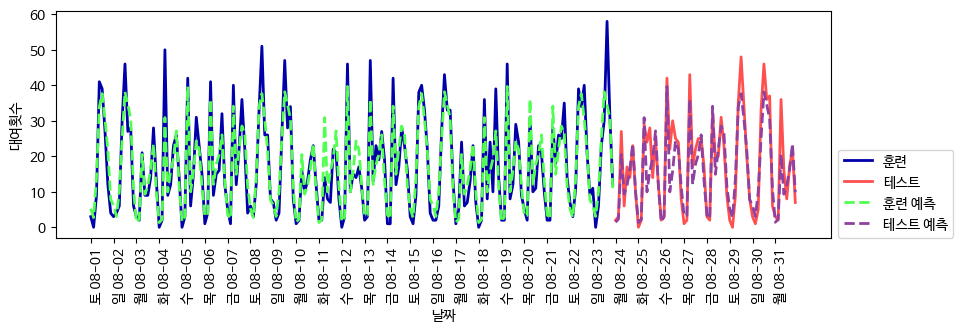